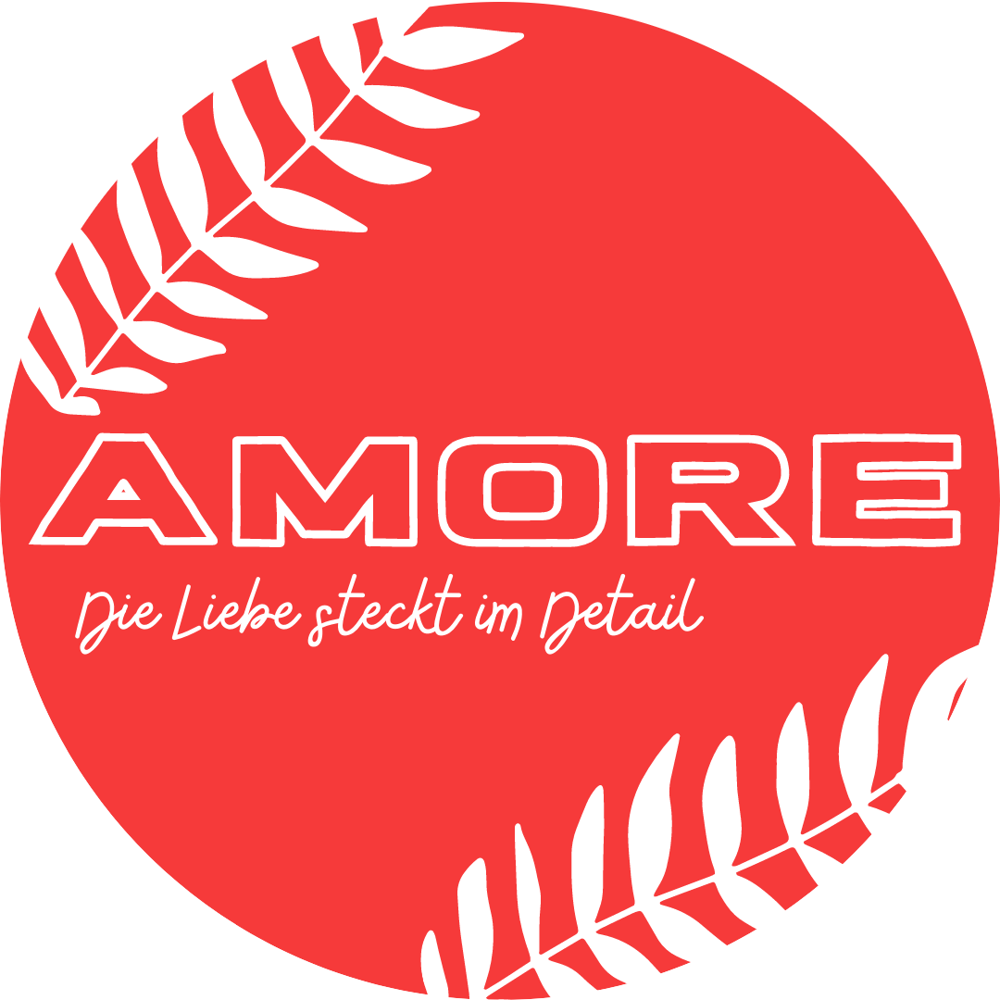

Alle SocialMedia-Plattformen, bei welchen ich schon aktiv war
Vorwort:
Ich bin Ingo, 17 Jahre alt und mir ist langweilig, da ich diesen Teil der Aufgabe in der ersten Nacht gemacht habe. Außerdem interessiere ich mich für Videoaufnahmen sowie Videoschnitt. Es passiert auch hin und wieder, dass ich mir viel zu große Aufgaben selbst einteile, obwohl ich ganz genau weiß, dass ich eigentlich nicht die Zeit dafür habe... Aber das wichtigste ist, dass ich zumindestens etwas mache, oder?
Hier werden jedoch Plattformen genannt, bei denen ich schon aktiv gearbeitet habe und die Verlinkung zu den Accounts/Kanälen:
Tik Tok
Social Media hat schulisch für mich allein hier begonnen, als am Anfang des 3. Schuljahres die Aufgabe aufgegeben worden ist, ein Social Media Account zu betreiben. Man sollte sich einen festen Plan machen, DAS war bei mir jedoch ein kleines Problem...
Instagram
Als die Junior Company gegründet worden ist, habe ich den Insta-Part übernommen, mit der Aufgabe immerwieder Posts hochzuladen. Alle Fotos wurden von mir selbst gemacht, wirklich...
Außerdem habe ich auch einen eigenen Acc mit nicen Beiträgen :)

YouTube
Bevor ich überhaupt mit den zuletzt ernannten Sachen begonnen habe, habe ich schon begonnen, an einem YT-Kanal zu arbeiten. Der Kanal betseht aus Gaming und Unterhaltung gemixt und sollte deswegen gut was bieten können. Leider bin ich inaktiv geworden, sol sich aber demnächst ändern...